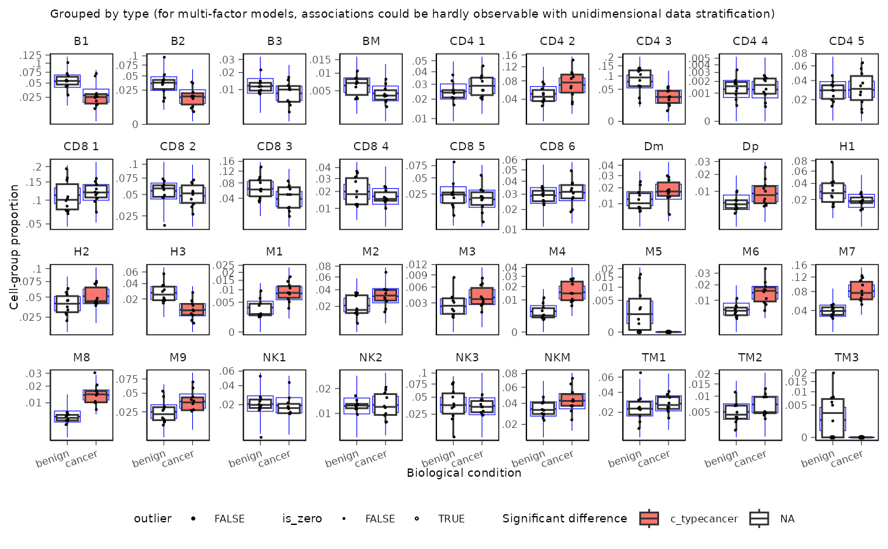

Creates a boxplot visualization of the model results from sccomp. This function plots the estimated cell proportions across samples, highlighting significant changes in cell composition according to a specified factor.
Arguments
- .data
A tibble containing the results from
sccomp_estimateandsccomp_test, including the columns: cell_group name, sample name, read counts, factor(s), p-values, and significance indicators.- factor
A character string specifying the factor of interest included in the model for stratifying the boxplot.
- significance_threshold
A numeric value indicating the threshold for labeling significant cell-groups. Defaults to 0.05.
- significance_statistic
Character vector indicating which statistic is used to colour significant groups. Defaults to
c("pH0", "FDR").- test_composition_above_CLR_fold_change
A positive numeric value representing the effect size threshold used in the hypothesis test. A value of 0.2 corresponds to a change in cell proportion of approximately 10% for a cell type with a baseline proportion of 50% (e.g., from 45% to 55%). This threshold is consistent on the centered log-ratio-unconstrained scale, even when the baseline proportion is close to 0 or 1.
- remove_unwanted_effects
A logical value indicating whether to remove unwanted variation from the data before plotting. Defaults to
FALSE.- cache_stan_model
A character string specifying the cache directory for compiled Stan models. Default is
sccomp_stan_models_cache_dirwhich points to~/.sccomp_models. Use a custom path in restricted environments where the default is not writable.
Value
A ggplot object representing the boxplot of cell proportions across samples, stratified by the specified factor.
References
S. Mangiola, A.J. Roth-Schulze, M. Trussart, E. Zozaya-Valdés, M. Ma, Z. Gao, A.F. Rubin, T.P. Speed, H. Shim, & A.T. Papenfuss, sccomp: Robust differential composition and variability analysis for single-cell data, Proc. Natl. Acad. Sci. U.S.A. 120 (33) e2203828120, https://doi.org/10.1073/pnas.2203828120 (2023).
Examples
print("cmdstanr is needed to run this example.")
#> [1] "cmdstanr is needed to run this example."
# Note: Before running the example, ensure that the 'cmdstanr' package is installed:
# install.packages("cmdstanr", repos = c("https://stan-dev.r-universe.dev/", getOption("repos")))
# \donttest{
if (instantiate::stan_cmdstan_exists()) {
data("counts_obj")
estimate <- sccomp_estimate(
counts_obj,
formula_composition = ~ type,
formula_variability = ~ 1,
sample = "sample",
cell_group = "cell_group",
abundance = "count",
cores = 1
) |>
sccomp_test()
# Plot the boxplot of estimated cell proportions
sccomp_boxplot(
.data = estimate,
factor = "type",
significance_threshold = 0.05
)
}
#> sccomp says: count column is an integer. The sum-constrained beta binomial model will be used
#> sccomp says: estimation
#> sccomp says: model design matrices
#> composition X: 2 parameters: (Intercept), typecancer
#> variability Xa: 1 parameter: (Intercept)
#> random effects: none
#> Loading model from cache...
#> Path [1] :Initial log joint density = -482869.652506
#> Path [1] : Iter log prob ||dx|| ||grad|| alpha alpha0 # evals ELBO Best ELBO Notes
#> 60 -4.787e+05 2.449e-02 3.909e-01 1.000e+00 1.000e+00 3505 -3.702e+03 -3.713e+03
#> Path [1] :Best Iter: [58] ELBO (-3702.134690) evaluations: (3505)
#> Path [2] :Initial log joint density = -482261.421279
#> Path [2] : Iter log prob ||dx|| ||grad|| alpha alpha0 # evals ELBO Best ELBO Notes
#> 73 -4.787e+05 1.332e-02 3.015e-01 1.000e+00 1.000e+00 4864 -3.701e+03 -3.707e+03
#> Path [2] :Best Iter: [72] ELBO (-3701.290441) evaluations: (4864)
#> Path [3] :Initial log joint density = -481455.857796
#> Path [3] : Iter log prob ||dx|| ||grad|| alpha alpha0 # evals ELBO Best ELBO Notes
#> 60 -4.787e+05 8.249e-03 1.758e-01 1.000e+00 1.000e+00 3540 -3.705e+03 -3.705e+03
#> Path [3] :Best Iter: [56] ELBO (-3704.804715) evaluations: (3540)
#> Path [4] :Initial log joint density = -484840.034393
#> Path [4] : Iter log prob ||dx|| ||grad|| alpha alpha0 # evals ELBO Best ELBO Notes
#> 70 -4.787e+05 1.525e-02 3.518e-01 1.000e+00 1.000e+00 4507 -3.701e+03 -3.707e+03
#> Path [4] :Best Iter: [69] ELBO (-3700.908838) evaluations: (4507)
#> Path [5] :Initial log joint density = -481542.014031
#> Path [5] : Iter log prob ||dx|| ||grad|| alpha alpha0 # evals ELBO Best ELBO Notes
#> 65 -4.787e+05 1.230e-02 1.768e-01 1.000e+00 1.000e+00 3940 -3.704e+03 -3.709e+03
#> Path [5] :Best Iter: [60] ELBO (-3703.889623) evaluations: (3940)
#> Path [6] :Initial log joint density = -482861.977302
#> Path [6] : Iter log prob ||dx|| ||grad|| alpha alpha0 # evals ELBO Best ELBO Notes
#> 61 -4.787e+05 1.068e-02 3.229e-01 4.025e-01 1.000e+00 3753 -3.707e+03 -3.714e+03
#> Path [6] :Best Iter: [59] ELBO (-3706.614027) evaluations: (3753)
#> Path [7] :Initial log joint density = -481588.930739
#> Path [7] : Iter log prob ||dx|| ||grad|| alpha alpha0 # evals ELBO Best ELBO Notes
#> 68 -4.787e+05 8.588e-03 2.114e-01 1.000e+00 1.000e+00 4293 -3.702e+03 -3.701e+03
#> Path [7] :Best Iter: [68] ELBO (-3701.145792) evaluations: (4293)
#> Path [8] :Initial log joint density = -481272.480055
#> Path [8] : Iter log prob ||dx|| ||grad|| alpha alpha0 # evals ELBO Best ELBO Notes
#> 61 -4.787e+05 1.044e-02 2.461e-01 1.000e+00 1.000e+00 3651 -3.700e+03 -3.709e+03
#> Path [8] :Best Iter: [58] ELBO (-3700.357330) evaluations: (3651)
#> Path [9] :Initial log joint density = -481353.019046
#> Path [9] : Iter log prob ||dx|| ||grad|| alpha alpha0 # evals ELBO Best ELBO Notes
#> 64 -4.787e+05 2.813e-03 2.231e-01 6.559e-01 6.559e-01 3921 -3.702e+03 -3.714e+03
#> Path [9] :Best Iter: [61] ELBO (-3702.355311) evaluations: (3921)
#> Path [10] :Initial log joint density = -481325.651397
#> Path [10] : Iter log prob ||dx|| ||grad|| alpha alpha0 # evals ELBO Best ELBO Notes
#> 66 -4.787e+05 6.316e-03 2.023e-01 1.000e+00 1.000e+00 3994 -3.701e+03 -3.706e+03
#> Path [10] :Best Iter: [63] ELBO (-3700.698573) evaluations: (3994)
#> Path [11] :Initial log joint density = -482245.534721
#> Path [11] : Iter log prob ||dx|| ||grad|| alpha alpha0 # evals ELBO Best ELBO Notes
#> 74 -4.787e+05 8.695e-03 2.096e-01 1.000e+00 1.000e+00 4906 -3.700e+03 -3.702e+03
#> Path [11] :Best Iter: [71] ELBO (-3700.489083) evaluations: (4906)
#> Path [12] :Initial log joint density = -481565.379267
#> Path [12] : Iter log prob ||dx|| ||grad|| alpha alpha0 # evals ELBO Best ELBO Notes
#> 75 -4.787e+05 8.750e-03 2.297e-01 1.000e+00 1.000e+00 5016 -3.701e+03 -3.703e+03
#> Path [12] :Best Iter: [73] ELBO (-3701.125463) evaluations: (5016)
#> Path [13] :Initial log joint density = -481798.448830
#> Path [13] : Iter log prob ||dx|| ||grad|| alpha alpha0 # evals ELBO Best ELBO Notes
#> 71 -4.787e+05 1.444e-02 2.148e-01 1.000e+00 1.000e+00 4726 -3.701e+03 -3.699e+03
#> Path [13] :Best Iter: [71] ELBO (-3698.770345) evaluations: (4726)
#> Path [14] :Initial log joint density = -481392.392141
#> Path [14] : Iter log prob ||dx|| ||grad|| alpha alpha0 # evals ELBO Best ELBO Notes
#> 67 -4.787e+05 1.591e-02 3.650e-01 1.000e+00 1.000e+00 4136 -3.701e+03 -3.709e+03
#> Path [14] :Best Iter: [66] ELBO (-3700.567705) evaluations: (4136)
#> Path [15] :Initial log joint density = -481716.914631
#> Path [15] : Iter log prob ||dx|| ||grad|| alpha alpha0 # evals ELBO Best ELBO Notes
#> 70 -4.787e+05 1.465e-02 2.323e-01 1.000e+00 1.000e+00 4488 -3.701e+03 -3.710e+03
#> Path [15] :Best Iter: [64] ELBO (-3700.760909) evaluations: (4488)
#> Path [16] :Initial log joint density = -481380.112397
#> Path [16] : Iter log prob ||dx|| ||grad|| alpha alpha0 # evals ELBO Best ELBO Notes
#> 64 -4.787e+05 4.967e-03 1.699e-01 7.556e-01 7.556e-01 4031 -3.699e+03 -3.712e+03
#> Path [16] :Best Iter: [62] ELBO (-3698.732600) evaluations: (4031)
#> Path [17] :Initial log joint density = -487483.420517
#> Path [17] : Iter log prob ||dx|| ||grad|| alpha alpha0 # evals ELBO Best ELBO Notes
#> 69 -4.787e+05 3.349e-03 1.095e-01 7.317e-01 7.317e-01 4545 -3.700e+03 -3.719e+03
#> Path [17] :Best Iter: [62] ELBO (-3699.918438) evaluations: (4545)
#> Path [18] :Initial log joint density = -481489.187118
#> Path [18] : Iter log prob ||dx|| ||grad|| alpha alpha0 # evals ELBO Best ELBO Notes
#> 62 -4.787e+05 2.957e-02 2.132e-01 1.000e+00 1.000e+00 3851 -3.703e+03 -3.703e+03
#> Path [18] :Best Iter: [58] ELBO (-3702.973654) evaluations: (3851)
#> Path [19] :Initial log joint density = -482630.720859
#> Path [19] : Iter log prob ||dx|| ||grad|| alpha alpha0 # evals ELBO Best ELBO Notes
#> 69 -4.787e+05 7.852e-03 2.230e-01 1.000e+00 1.000e+00 4383 -3.701e+03 -3.709e+03
#> Path [19] :Best Iter: [66] ELBO (-3700.723051) evaluations: (4383)
#> Path [20] :Initial log joint density = -481661.892106
#> Path [20] : Iter log prob ||dx|| ||grad|| alpha alpha0 # evals ELBO Best ELBO Notes
#> 53 -4.787e+05 4.119e-03 3.055e-01 7.040e-01 7.040e-01 2994 -3.712e+03 -3.724e+03
#> Path [20] :Best Iter: [42] ELBO (-3712.077586) evaluations: (2994)
#> Path [21] :Initial log joint density = -484297.188125
#> Path [21] : Iter log prob ||dx|| ||grad|| alpha alpha0 # evals ELBO Best ELBO Notes
#> 69 -4.787e+05 8.923e-03 1.679e-01 1.000e+00 1.000e+00 4474 -3.699e+03 -3.704e+03
#> Path [21] :Best Iter: [65] ELBO (-3698.927338) evaluations: (4474)
#> Path [22] :Initial log joint density = -482028.005533
#> Path [22] : Iter log prob ||dx|| ||grad|| alpha alpha0 # evals ELBO Best ELBO Notes
#> 75 -4.787e+05 1.875e-02 1.757e-01 1.000e+00 1.000e+00 5148 -3.700e+03 -3.703e+03
#> Path [22] :Best Iter: [72] ELBO (-3700.136415) evaluations: (5148)
#> Path [23] :Initial log joint density = -481598.464794
#> Path [23] : Iter log prob ||dx|| ||grad|| alpha alpha0 # evals ELBO Best ELBO Notes
#> 53 -4.787e+05 8.275e-03 2.387e-01 1.000e+00 1.000e+00 2906 -3.711e+03 -3.725e+03
#> Path [23] :Best Iter: [52] ELBO (-3711.267161) evaluations: (2906)
#> Path [24] :Initial log joint density = -483892.171516
#> Path [24] : Iter log prob ||dx|| ||grad|| alpha alpha0 # evals ELBO Best ELBO Notes
#> 72 -4.787e+05 1.116e-02 2.156e-01 1.000e+00 1.000e+00 4666 -3.701e+03 -3.704e+03
#> Path [24] :Best Iter: [69] ELBO (-3700.766737) evaluations: (4666)
#> Path [25] :Initial log joint density = -483704.472672
#> Path [25] : Iter log prob ||dx|| ||grad|| alpha alpha0 # evals ELBO Best ELBO Notes
#> 58 -4.787e+05 1.644e-02 3.314e-01 1.000e+00 1.000e+00 3434 -3.704e+03 -3.712e+03
#> Path [25] :Best Iter: [56] ELBO (-3704.407682) evaluations: (3434)
#> Path [26] :Initial log joint density = -481551.500352
#> Path [26] : Iter log prob ||dx|| ||grad|| alpha alpha0 # evals ELBO Best ELBO Notes
#> 79 -4.787e+05 8.234e-03 1.187e-01 8.769e-01 8.769e-01 5286 -3.699e+03 -3.715e+03
#> Path [26] :Best Iter: [77] ELBO (-3698.709708) evaluations: (5286)
#> Path [27] :Initial log joint density = -482846.109658
#> Path [27] : Iter log prob ||dx|| ||grad|| alpha alpha0 # evals ELBO Best ELBO Notes
#> 65 -4.787e+05 1.471e-02 2.846e-01 7.909e-01 7.909e-01 4006 -3.703e+03 -3.715e+03
#> Path [27] :Best Iter: [58] ELBO (-3702.830381) evaluations: (4006)
#> Path [28] :Initial log joint density = -482402.959774
#> Path [28] : Iter log prob ||dx|| ||grad|| alpha alpha0 # evals ELBO Best ELBO Notes
#> 80 -4.787e+05 7.420e-03 1.973e-01 1.000e+00 1.000e+00 5495 -3.700e+03 -3.702e+03
#> Path [28] :Best Iter: [76] ELBO (-3699.567976) evaluations: (5495)
#> Path [29] :Initial log joint density = -482445.991102
#> Path [29] : Iter log prob ||dx|| ||grad|| alpha alpha0 # evals ELBO Best ELBO Notes
#> 57 -4.787e+05 8.336e-03 2.888e-01 1.000e+00 1.000e+00 3392 -3.708e+03 -3.707e+03
#> Path [29] :Best Iter: [57] ELBO (-3706.645696) evaluations: (3392)
#> Path [30] :Initial log joint density = -483472.903383
#> Path [30] : Iter log prob ||dx|| ||grad|| alpha alpha0 # evals ELBO Best ELBO Notes
#> 62 -4.787e+05 1.429e-02 3.439e-01 1.000e+00 1.000e+00 3630 -3.703e+03 -3.705e+03
#> Path [30] :Best Iter: [59] ELBO (-3703.281224) evaluations: (3630)
#> Path [31] :Initial log joint density = -481591.159094
#> Path [31] : Iter log prob ||dx|| ||grad|| alpha alpha0 # evals ELBO Best ELBO Notes
#> 64 -4.787e+05 2.470e-02 2.094e-01 1.000e+00 1.000e+00 3831 -3.705e+03 -3.702e+03
#> Path [31] :Best Iter: [64] ELBO (-3702.390651) evaluations: (3831)
#> Path [32] :Initial log joint density = -481452.832798
#> Path [32] : Iter log prob ||dx|| ||grad|| alpha alpha0 # evals ELBO Best ELBO Notes
#> 66 -4.787e+05 1.187e-02 2.220e-01 8.935e-01 8.935e-01 3928 -3.702e+03 -3.714e+03
#> Path [32] :Best Iter: [63] ELBO (-3702.455482) evaluations: (3928)
#> Path [33] :Initial log joint density = -481264.684557
#> Path [33] : Iter log prob ||dx|| ||grad|| alpha alpha0 # evals ELBO Best ELBO Notes
#> 64 -4.787e+05 5.962e-03 1.638e-01 1.000e+00 1.000e+00 3867 -3.702e+03 -3.714e+03
#> Path [33] :Best Iter: [61] ELBO (-3702.489158) evaluations: (3867)
#> Path [34] :Initial log joint density = -481652.342145
#> Path [34] : Iter log prob ||dx|| ||grad|| alpha alpha0 # evals ELBO Best ELBO Notes
#> 76 -4.787e+05 2.615e-02 4.049e-01 1.000e+00 1.000e+00 5006 -3.696e+03 -3.706e+03
#> Path [34] :Best Iter: [74] ELBO (-3696.310475) evaluations: (5006)
#> Path [35] :Initial log joint density = -481779.870773
#> Path [35] : Iter log prob ||dx|| ||grad|| alpha alpha0 # evals ELBO Best ELBO Notes
#> 58 -4.787e+05 9.584e-03 1.884e-01 1.000e+00 1.000e+00 3434 -3.703e+03 -3.713e+03
#> Path [35] :Best Iter: [55] ELBO (-3702.951481) evaluations: (3434)
#> Path [36] :Initial log joint density = -481995.272300
#> Path [36] : Iter log prob ||dx|| ||grad|| alpha alpha0 # evals ELBO Best ELBO Notes
#> 75 -4.787e+05 2.301e-02 1.875e-01 1.000e+00 1.000e+00 4959 -3.700e+03 -3.699e+03
#> Path [36] :Best Iter: [75] ELBO (-3699.081432) evaluations: (4959)
#> Path [37] :Initial log joint density = -481101.063140
#> Path [37] : Iter log prob ||dx|| ||grad|| alpha alpha0 # evals ELBO Best ELBO Notes
#> 67 -4.787e+05 7.441e-03 1.949e-01 1.000e+00 1.000e+00 4211 -3.700e+03 -3.703e+03
#> Path [37] :Best Iter: [64] ELBO (-3699.791022) evaluations: (4211)
#> Path [38] :Initial log joint density = -481393.340140
#> Path [38] : Iter log prob ||dx|| ||grad|| alpha alpha0 # evals ELBO Best ELBO Notes
#> 74 -4.787e+05 4.521e-03 2.836e-01 5.337e-01 5.337e-01 4838 -3.702e+03 -3.711e+03
#> Path [38] :Best Iter: [72] ELBO (-3701.825440) evaluations: (4838)
#> Path [39] :Initial log joint density = -481621.577056
#> Path [39] : Iter log prob ||dx|| ||grad|| alpha alpha0 # evals ELBO Best ELBO Notes
#> 62 -4.787e+05 5.423e-03 1.736e-01 1.000e+00 1.000e+00 3751 -3.703e+03 -3.709e+03
#> Path [39] :Best Iter: [60] ELBO (-3703.102457) evaluations: (3751)
#> Path [40] :Initial log joint density = -481413.347718
#> Path [40] : Iter log prob ||dx|| ||grad|| alpha alpha0 # evals ELBO Best ELBO Notes
#> 71 -4.787e+05 7.678e-03 1.992e-01 1.000e+00 1.000e+00 4568 -3.700e+03 -3.700e+03
#> Path [40] :Best Iter: [71] ELBO (-3699.515681) evaluations: (4568)
#> Path [41] :Initial log joint density = -481645.379377
#> Path [41] : Iter log prob ||dx|| ||grad|| alpha alpha0 # evals ELBO Best ELBO Notes
#> 65 -4.787e+05 1.328e-02 2.519e-01 8.785e-01 8.785e-01 3898 -3.701e+03 -3.713e+03
#> Path [41] :Best Iter: [63] ELBO (-3701.233838) evaluations: (3898)
#> Path [42] :Initial log joint density = -481624.339458
#> Path [42] : Iter log prob ||dx|| ||grad|| alpha alpha0 # evals ELBO Best ELBO Notes
#> 63 -4.787e+05 1.683e-02 3.422e-01 1.000e+00 1.000e+00 3911 -3.703e+03 -3.706e+03
#> Path [42] :Best Iter: [60] ELBO (-3703.260352) evaluations: (3911)
#> Path [43] :Initial log joint density = -481455.515356
#> Path [43] : Iter log prob ||dx|| ||grad|| alpha alpha0 # evals ELBO Best ELBO Notes
#> 76 -4.787e+05 1.581e-02 2.509e-01 7.836e-01 7.836e-01 5082 -3.698e+03 -3.710e+03
#> Path [43] :Best Iter: [73] ELBO (-3698.486992) evaluations: (5082)
#> Path [44] :Initial log joint density = -481374.423368
#> Path [44] : Iter log prob ||dx|| ||grad|| alpha alpha0 # evals ELBO Best ELBO Notes
#> 65 -4.787e+05 5.912e-03 1.828e-01 1.000e+00 1.000e+00 3999 -3.697e+03 -3.706e+03
#> Path [44] :Best Iter: [62] ELBO (-3697.494603) evaluations: (3999)
#> Path [45] :Initial log joint density = -481394.180732
#> Path [45] : Iter log prob ||dx|| ||grad|| alpha alpha0 # evals ELBO Best ELBO Notes
#> 70 -4.787e+05 1.439e-02 2.937e-01 1.000e+00 1.000e+00 4342 -3.701e+03 -3.708e+03
#> Path [45] :Best Iter: [69] ELBO (-3700.978938) evaluations: (4342)
#> Path [46] :Initial log joint density = -481744.207406
#> Path [46] : Iter log prob ||dx|| ||grad|| alpha alpha0 # evals ELBO Best ELBO Notes
#> 62 -4.787e+05 1.409e-02 2.597e-01 8.269e-01 8.269e-01 3628 -3.702e+03 -3.715e+03
#> Path [46] :Best Iter: [55] ELBO (-3702.278584) evaluations: (3628)
#> Path [47] :Initial log joint density = -482778.605223
#> Path [47] : Iter log prob ||dx|| ||grad|| alpha alpha0 # evals ELBO Best ELBO Notes
#> 73 -4.787e+05 2.674e-03 2.740e-01 6.284e-01 6.284e-01 4695 -3.702e+03 -3.721e+03
#> Path [47] :Best Iter: [70] ELBO (-3702.256959) evaluations: (4695)
#> Path [48] :Initial log joint density = -481631.015033
#> Path [48] : Iter log prob ||dx|| ||grad|| alpha alpha0 # evals ELBO Best ELBO Notes
#> 65 -4.787e+05 9.604e-03 1.625e-01 1.000e+00 1.000e+00 4024 -3.702e+03 -3.704e+03
#> Path [48] :Best Iter: [57] ELBO (-3702.102822) evaluations: (4024)
#> Path [49] :Initial log joint density = -482785.355176
#> Path [49] : Iter log prob ||dx|| ||grad|| alpha alpha0 # evals ELBO Best ELBO Notes
#> 64 -4.787e+05 5.029e-03 2.481e-01 1.000e+00 1.000e+00 3873 -3.706e+03 -3.717e+03
#> Path [49] :Best Iter: [61] ELBO (-3705.805298) evaluations: (3873)
#> Path [50] :Initial log joint density = -481425.594734
#> Path [50] : Iter log prob ||dx|| ||grad|| alpha alpha0 # evals ELBO Best ELBO Notes
#> 64 -4.787e+05 2.111e-02 3.473e-01 9.444e-01 9.444e-01 3869 -3.698e+03 -3.710e+03
#> Path [50] :Best Iter: [63] ELBO (-3697.955384) evaluations: (3869)
#> Finished in 14.2 seconds.
#> sccomp says: to do hypothesis testing run `sccomp_test()`,
#> the `test_composition_above_CLR_fold_change` = 0.1 equates to a change of ~10%, and
#> 0.7 equates to ~100% increase, if the baseline is ~0.1 proportion.
#> Use `sccomp_proportional_fold_change` to convert c_effect (linear) to proportion difference (non-linear).
#> sccomp says: auto-cleanup removed 1 draw files from 'sccomp_draws_files'
#> Joining with `by = join_by(cell_group, M, parameter)`
#> sccomp says: When visualising proportions, especially for complex models, consider setting `remove_unwanted_effects=TRUE`. This will adjust the proportions, preserving only the observed effect.
#> sccomp says: from version 2.1.25, the default `significance_statistic` for boxplots is `pH0` (previously `FDR`). Set `significance_statistic = "FDR"` to use the previous default.
#> Loading model from cache...
#> Running standalone generated quantities after 1 MCMC chain, with 1 thread(s) per chain...
#>
#> Chain 1 Elapsed Time: 0.104 seconds (Generated Quantities)
#> Chain 1 finished in 0.0 seconds.
#> Joining with `by = join_by(cell_group, sample)`
#> Joining with `by = join_by(cell_group, type)`
#> Warning: Ignoring unknown parameters: `median.linewidth`

# }